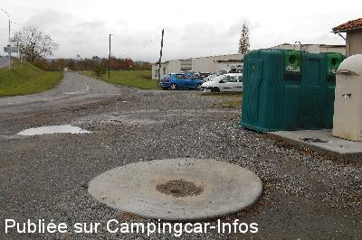
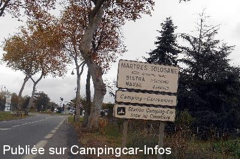
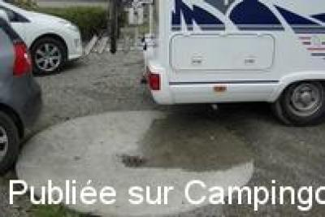

ASN = Aire de services avec stationnement nuit possible de :
MARTRES TOLOSANE
(N° 147)
Accès/adresse :
Rue du Pagès
31220 MARTRES TOLOSANE
31220 MARTRES TOLOSANE
Latitude : (Nord) 43.20225° Décimaux ou 43° 12′ 8′′
Longitude : (Est) 1.01104° Décimaux ou 1° 0′ 39′′
Tarif : Gratuit
Services :


Tous commerces
Autres informations :
Ouverte toute l'année
Tél Office du Tourisme : +33(0)561 986 641
http://www.tourisme-martres-tolosane.fr

Le 15/11/2013 par andsyl

Le 15/11/2013 par andsyl

Le 27/04/2012 par JacLer
de
JacLer
le 27/04/2012 :
Bonjour,
J'ai pu vérifier les inexistences du 220 volts et de l'eau propre. Une aire sans stationnement et occupée par des véhicules qui génent la mise en oeuvre des services (photos à l'appui). L'aire n'est pas signalée dans la ville. Une matérialisation au sol pourrait améliorer la situation. A n'utiliser qu'en cas d'urgence pour les eaux usées et les cassettes. Environnement peut agréable.
Bonjour,
J'ai pu vérifier les inexistences du 220 volts et de l'eau propre. Une aire sans stationnement et occupée par des véhicules qui génent la mise en oeuvre des services (photos à l'appui). L'aire n'est pas signalée dans la ville. Une matérialisation au sol pourrait améliorer la situation. A n'utiliser qu'en cas d'urgence pour les eaux usées et les cassettes. Environnement peut agréable.
de
la foudre
le 08/09/2010 :
Laissez tomber les copains... je suis du coin et camping-cariste également. Ville à sens unique avec des remparts. Je vous conseille l'aire de Mazères du Salat à 10km. En plus, c'est un endroit tranquille et agréable près de la rivière du Salat. Bonne route.
Laissez tomber les copains... je suis du coin et camping-cariste également. Ville à sens unique avec des remparts. Je vous conseille l'aire de Mazères du Salat à 10km. En plus, c'est un endroit tranquille et agréable près de la rivière du Salat. Bonne route.
de
MartYves 03
le 02/08/2010 :
Nous avons tourné dans des rues étroites, nous nous sommes fait klaxonner pas des automobilistes impatients pour finalement quitter ce village. Manque évident de signalisation ou GPS pas à jour, il serait bon qu'un camping-cariste du coin apporte quelques explications. merci.
Nous avons tourné dans des rues étroites, nous nous sommes fait klaxonner pas des automobilistes impatients pour finalement quitter ce village. Manque évident de signalisation ou GPS pas à jour, il serait bon qu'un camping-cariste du coin apporte quelques explications. merci.
de
Ladoumègue
le 27/04/2008 :
Pas d"électricité, pas d'eau ! Quant au stationnement, aléatoire : près du cimetière, oui ... mais près aussi de l'autoroute !
Pas d"électricité, pas d'eau ! Quant au stationnement, aléatoire : près du cimetière, oui ... mais près aussi de l'autoroute !
de
M Jousset
le 09/08/2006 :
Pas de borne electrique sur l'aire de service
vidange eau usée et wc méme regard
robinet d'eau faible débit
Pas de borne electrique sur l'aire de service
vidange eau usée et wc méme regard
robinet d'eau faible débit
de
Dominique Veillon et Philippe Bury
le 08/05/2006 :
Borne hors service lors d un passage début mai 2006 alors nous sommes allés au parc de loisirs tout proche où une garde-pêche... ou employé communal nous a chassé sous peine d'alerter la gendarmerie car il y avait un camping sur la commune. Ce même camping accueille bien les campings-car pour une nuit... mais à 16 euros la nuit!... Pour une commune qui propose une aire gratuite avec tous services.... nous ne la recommandons pas. Bonne route.
Borne hors service lors d un passage début mai 2006 alors nous sommes allés au parc de loisirs tout proche où une garde-pêche... ou employé communal nous a chassé sous peine d'alerter la gendarmerie car il y avait un camping sur la commune. Ce même camping accueille bien les campings-car pour une nuit... mais à 16 euros la nuit!... Pour une commune qui propose une aire gratuite avec tous services.... nous ne la recommandons pas. Bonne route.
de
Rossi
le 26/03/2003 :
Aire gratuite, à l'extérieur du village
Aire gratuite, à l'extérieur du village